<img> as data-original-src.
Contents: Basics; A Few Words About AM Operation; Alinco DX-SR8T; Alinco DX-SR9T; Elecraft KX3; Icom IC-706; Icom Ic-7000; Icom IC-7100; Icom IC-7200; Icom IC-7300; Kenwood TS-480; Yaesu FT-450; Yaesu FT-891; Yaesu FT-991; Other transceivers; Common Problems; What To Do About Heat; Voltage Problems;
Modern transceivers designed primarily for mobile use often cover all of the amateur bands (excluding the 1.25 meters) from 160 meters through 70 cm. A few only cover 160 thought 6 meters. Most are multi-mode (at least CW, SSB, and AM), and are remotable or remote only. If you do remote yours, read this article on cabling, and this one on wiring.
Their light weight control heads makes mounting easier, while the rest of the transceiver can be mounted out of the way under a seat. Trunk mounting not only adds complexity to the DC and control wiring, but adds a significant heat load. If there is no other place but the trunk, do not mount the transceiver directly under the package shelf. Remember, during the summer months, trunk temperatures can exceed 180°F!
There are several drawbacks to miniaturization. The controls are also miniaturized making it difficult for large fingered folks to do the adjusting, which says nothing about doing it while under way. The front panel real estate is at a premium which means some controls serve multiple purposes and readouts become difficult to see. All of this requires the use of menus further frustrating the average user.
Impedance matching can present a problem too, as all solid state transceivers are designed for 50 ohm, non reactive loads. As the SWR climbs, so does the level of IMD (Inter Modulation Distortion), hence impedance matching becomes a necessity. This subject is covered in the Antenna Matching article.
Of all the current made-for-mobile radios use some form of DSP (digital signal processing). All are audio based except the Icom IC-7000/7100/7200/7300, FT-450D, and FT-991. While most AF based ones give a good account of themselves, digital DSP is a step above. However, all of them produce some distortion in the receive audio, especially if incorrectly adjusted. Therefore, attempting to overcome an excessive level of egressed RFI isn't as productive as addressing the RFI problem in the first place with proper noise suppression.
This brings up another issue, and that is sensitivity. Even on a very quiet band, the background noise level can be many dB above the nominal sensitivity of even an inexpensive transceiver. In fact, any sensitivity greater than about -115 dB or so is plenty enough. What is needed, is selectivity!
If selectivity is lacking, nearby stations can overload the various internal circuits (RF, IF, and even audio ones). All of this make copying the station you're trying to work difficult, sensitivity notwithstanding. In fact, too much sensitivity can add insult to injury. That's why receivers used to have RF gain controls. Problem is nowadays, that RF gain control is actually an IF gain control, so as about all that can be done is to kick in an attenuator. If that attenuator is IF based, as most are, even that won't help to increase selectivity.
As a general rule, receivers which use crystal-lattice (discrete filters, roofing, and IF) tend to have better selectivity that those with just DSP. This said, some of the higher end DSP only transceivers rival their crystal-laden competition. But when it comes to mobile operation, we're sort of stuck choosing one over the other. Pundits always argue that crystal-lattice always beats any DSP, but that's carrying things a bit far. What really counts is what happens in the real world. This is why it is so important to choose your hardware based on personal experience, not on someone else's opinion!
Almost all modern transceivers have built in speech processing, typically in the form of speech compression. Universally, these subsystems are over-used, and ill-adjusted, resulting in excessive amounts of IMD. Using these subsystems in a mobile scenario is even a worse scenario! They not only increase voltage drop (which further increases IMD), they bring up the background noise to unacceptable levels even when using noise canceling microphones. And, if you use an amplifier, use of speech compression can overload the electrical system due to the increased average current draw. The best advice? Don't use speech compression!
A few Words About AM Operation
All modern SSB transceivers which offer an AM mode, generate AM at a low level. Subsequent IF stages only amplify the level. If the correct bandpass filter is used, and the carrier level is within reason, there is virtually no discernible difference between low level and high level AM generation. However, depending on the basic design, the AM sidebands may not be symmetrical. As long as the non symmetry isn't severe, no one on the receive end will ever know.
This said, raising the carrier level beyond recommended levels (≈25% of the peak power output), will result is really lousy-sounding AM! In fact, to assure a good clean AM signal, setting the carrier level to 20% of the peak output rating of the transceiver (nominally 100 watts PEP), is good amateur practice.
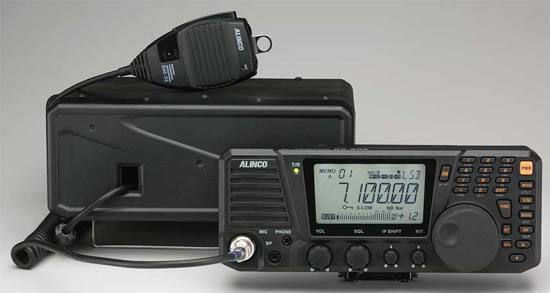
At first blush, it would appear to have some quirky features until you think about them. For example, there is no rear panel speaker jack. It's located on the front of the remote head, just below a build in, front firing speaker. There's even a separate headphone jack! However, the audio amplifier is rated at just 2 watts, it remains to be seen if it is adequate for a noisy mobile installations.
The speaker jack doubles as a cloning port, so you can transfer memories from one SR8 to another. It can also be connected to a computer. More information on this is in the manual, and on their web site, respectively.
For me personally, it has one flaw. How minor (major for me), depends on your installation. That is to say, the VFO knob is very easy to rotate. There is no adjustable drag, nor does it have a stepped detent like its competitors. It does have an electronic lock for the VFO which may suffice for most users.
On a positive note, the remote cable between the head, and the main unit is a CAT5. But.... you should use the factory supplied cable which comes with the mobile mounting package. The modular connector is molded on, and is constructed of stranded wire! Remember, using solid conductor cable in a mobile scenario is always going to be problematic!
The microphone gain adjustment is internal, and requires the cover to be removed to adjust it. The truth is, this is not such a bad idea, as typically microphone gains are set and forget. There is a speech compressor built in too, and it can even be used with FM (which isn't such a good idea in either case). I'll give Alinco credit, however, because of this little blurb in the manual; Talking close to the microphone, too loud or using linear amplifier while compressor is ON, the modulation may be distorted or transmits splatter to bother other communications. Of course close talking is required if you want to limit background noise with an appropriate lowering of the microphone gain setting.
It does not have any type of DSP, but it does have an IF shift function. While good, it might behoove some users to purchase an audio-based DSP speaker. The link list several different brands.
The adjustable brightness LCD is back lit, and is black on a very light gray background, making it easy to see in most cases. It can, however, washout in direct sunlight. The head is 9.5x4 inches, so the controls are far enough apart even for fat-fingers. There are back-panel connections for ALC, and amplifier keying, but a keying buffer will be required in most cases.
The rest of the radio is more or less basic stuff, and it well covered in the manual. By the way, while the manual is well written, there's still some Engrish to plow through.
Some may argue that the SR8 isn't a full-featured transceiver. Well, it isn't! It is, however, a well-designed, 160 through 10 mobile transceiver. If you don't need (or want) 6 meters and above, it is a worthy competitor in many respects. One thing is for sure, you can't argue about the price!
The DX-SR9T is a slight upgrade to the DX-SR8T. The main difference is what Alinco calls I/Q. It is best described as a software defined addition. In their words:
The SDR system in DX-SR9 consists of I/Q signal output and a mixer circuit. It requires a high quality sound device (internal or USB-interface) and PC specs as follows. Please remember; Higher the PC spec, Better the SDR performance!
In a mobile-in-motion scenario, this addition is of questionable use, but for your average, gadget-obsessed, radio amateur fanatic, it might just fit the bill. It is priced slightly higher than the DX-SR8T,
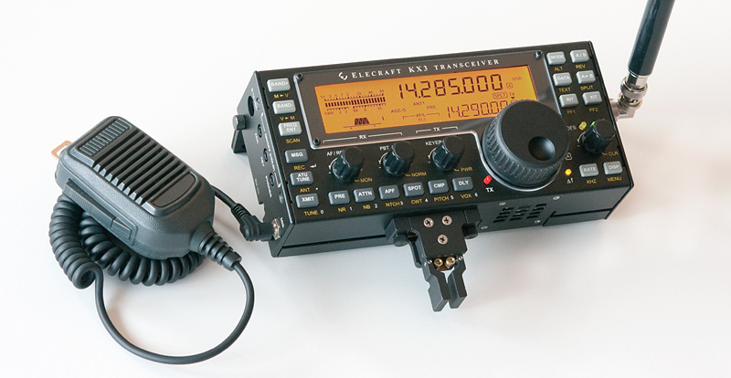
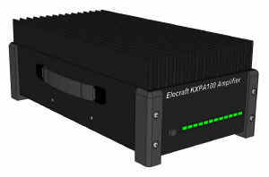
 The IC-706 in its various iterations was (still is!) the most popular transceiver, ever! After the introduction of the IC-7000, many thought Icom would drop the 706 from its product line. However, it remained so popular, Icom was still manufacturing it in its latest form, the IC-706MkIIg, until March of 2010 when it was finally discontinued. Its ≈$900 price tag replete with remote mounting kit, is certainly one reason for its popularity. By the way, the original model (IC-706 w/o suffix) doesn't have VHF coverage or DSP.
The IC-706 in its various iterations was (still is!) the most popular transceiver, ever! After the introduction of the IC-7000, many thought Icom would drop the 706 from its product line. However, it remained so popular, Icom was still manufacturing it in its latest form, the IC-706MkIIg, until March of 2010 when it was finally discontinued. Its ≈$900 price tag replete with remote mounting kit, is certainly one reason for its popularity. By the way, the original model (IC-706 w/o suffix) doesn't have VHF coverage or DSP.
In any case, it should be considered a legacy transceiver at this point. If you do find one fully working, don't pay over $125, no matter how clean it looks. And remember, drivers, and remote kits for it are nonobtainium, so buyers beware!
It covers 160 meters through 450 (MkII versions), has extended general coverage receive, and supports both FSK and AFSK. One interesting feature with obvious benefits is its separate power output adjustments for HF, 6 meters, 2 meters, and the 70 cm bands. It even has a built in CW keyer, which can be keyed by the microphone's up and down frequency buttons. It has the usual complements of FM, AM, splits, auto-repeat off sets, ninety nine memory channels, and a very capable audio-based DSP. Like a lot of miniaturized radios, it requires an interface buffer to key a power amplifier (except for the SG500 and THP 450HL). The IC-706 has one unique feature, and that is a BFO offset (-200 to +200 Hz). This allows tailoring the transmit frequency to one's voice characteristics.
 The Icom IC-7000 was been discontinued in May 2014. Replacement parts are getting hard to find, and finals for the earlier models are nonobtainium! Yet, it is still very popular as it has innovations that place it a head above the competition in many ways. Aside from its advanced IF DSP, Icom did a good job of answering the common complaints with respect to menu selection, and the buttons used there in. It is slightly smaller in length than the 706, has a color display, a built-in speech synthesizer, and enough memories to keep anyone happy. The street price was $1,299 which was a bargain considering its overall capabilities. The remote kit is $110, but is becoming scarce.
The Icom IC-7000 was been discontinued in May 2014. Replacement parts are getting hard to find, and finals for the earlier models are nonobtainium! Yet, it is still very popular as it has innovations that place it a head above the competition in many ways. Aside from its advanced IF DSP, Icom did a good job of answering the common complaints with respect to menu selection, and the buttons used there in. It is slightly smaller in length than the 706, has a color display, a built-in speech synthesizer, and enough memories to keep anyone happy. The street price was $1,299 which was a bargain considering its overall capabilities. The remote kit is $110, but is becoming scarce.
The IC-7000 got a bad rap when it was first introduced with respect to a high-pitched squeal when headsets were used. It was eventually traced to an incorrectly placed grounding clip. Apparently, this occurred when the radios were modified to meet FCC rules about not receiving VHF TV stations. Sort of a moot point now that all TV stations are digital.
The power cable is the newer style four pin, and the matching power supply is a PS126. There are adapter cables from Icom (and the after-market) available, so interfacing to the PS-125 is easy. The DC power cable fuses have been moved to the battery end where they belong.
The PTT keying capabilities of the 7000 is 200 mils (the 706 is just 20 mils). While this fact still requires a buffer interface to key most amplifiers (SG500 is an exception), it was a step in the right direction. Incidentally, the 13 pin accessory plug shipped with the Icom comes equipped with pigtails for some odd reason. However, late-model Kenwoods use the same plug, so most amateur suppliers carry them. The plug sells for about $10.
The Icom IC-7000, stock out of the box, does not send live TouchTones®. Rather, it uses one of just four, preprogrammed memory locations. If you operate through the MegaLink® system, this is a big drawback. Some models even have PTT built in, making their use much easier. They've been in business since 1976, and offer excellent customer service.
 A lot of amateurs are adding video input devices to their Navi units as a means of displaying the front panel. It works, but if the display is larger than 7 inches, the lettering starts to be rather blotchy looking, especially if you use the alternate fonts. If you're in the market for a Navi video adapter, I suggest you look at the TV&Nav2Go system. It retails for $225 plus shipping, or about half what competing brands sell for. It is a small box about 4 inches square, and about 1 inch thick. The instructions are nearly worthless, but the unit is so simple it isn't difficult to install. Just remember to solder the green wire to its companion ground, and not to the parking brake as indicated. It requires 13.8 VDC even if you aren't using it to display the front panel, so some form of power switching will be necessary.
A lot of amateurs are adding video input devices to their Navi units as a means of displaying the front panel. It works, but if the display is larger than 7 inches, the lettering starts to be rather blotchy looking, especially if you use the alternate fonts. If you're in the market for a Navi video adapter, I suggest you look at the TV&Nav2Go system. It retails for $225 plus shipping, or about half what competing brands sell for. It is a small box about 4 inches square, and about 1 inch thick. The instructions are nearly worthless, but the unit is so simple it isn't difficult to install. Just remember to solder the green wire to its companion ground, and not to the parking brake as indicated. It requires 13.8 VDC even if you aren't using it to display the front panel, so some form of power switching will be necessary.
If you want the best transmit audio out of an IC-7000, here's a suggestion. Set the transmit audio to Wide position. Set the high frequency rolloff at 2.5 kHz (factory is 2.7 kHz), and leave the low frequency setting to 300 Hz (these settings minimize IMD). Close talk the microphone (one inch away from your lips), and set the microphone gain at about 7% for the average voice. And, if your were thinking about doing a microphone mod to increase the low frequency content, forget it, as this defeats the HM-151's noise canceling capability; something you don't want to do in a mobile scenario.
 If you use an Icom 2KL amplifier, or an Icom AT-500 tuner, or one of the many after-market devices which use the band select voltage for control, you'll have to open up the radio and solder a jumper to activate it. Doing so is not an easy task, and one best left to a professional. Fact is, the Owner's Manual states: "Performing this modification is the customers responsibility. Icom does not guarantee the modifications results." One of the reasons for the no guarantee is the fact the Band Voltage is not stable when the radio is battery powered.
If you use an Icom 2KL amplifier, or an Icom AT-500 tuner, or one of the many after-market devices which use the band select voltage for control, you'll have to open up the radio and solder a jumper to activate it. Doing so is not an easy task, and one best left to a professional. Fact is, the Owner's Manual states: "Performing this modification is the customers responsibility. Icom does not guarantee the modifications results." One of the reasons for the no guarantee is the fact the Band Voltage is not stable when the radio is battery powered.
Another very important caveat with respect to the IC-7000 (and older IC-706), is to make sure the grounding screw for the remote cable is installed. It is very small (2 mm x 6 mm), and is depicted on page 16, center drawing, Figure 2, in the Owners Manual (reproduced at left). Leave it out, and you're in for major RFI problems. The 706 cable is slightly different (see page 10), but the same caveat applies.
The factory-supplied remote head mounting bracket allows the head to be easily knocked loose, but there is a cure! In the center of the bracket is a 1/4x20 threaded boss which is directly under a small trapezoidal indentation in the head. A short 1/4x20 bolt can be used to secure the head to the mounting bracket. If you use a longer bolt equipped with a jam nut, the head can also be mounted to a variety of brackets using the bolt as a mounting stud.
If you own, or plan to purchase, an Icom IC-7000, please read this paragraph carefully. The port on the rear apron of the IC-7000 designed to interface with the AH-4 auto coupler is configured differently than the IC-706 series. Pin 1 (TKEY) input is shared internally with the temperature control circuitry. This pin MUST be left floating (not pulled high). If it isn't, the fan may not come on as required, which can lead to failure of the final transistors! Most devices used to mimic the AH-4, and trick the IC-706 into transmitting 10 watts of carrier are not compatible with the IC-7000. This includes the suggested circuitry from SGC, at least one of the older model screwdriver controllers, and most small tuner modules. In other words, just because it appears to work correctly, it might not. Before using any interface designed for an Icom IC-706, ask the manufacturer if it is fully compatible with an Icom IC-7000.
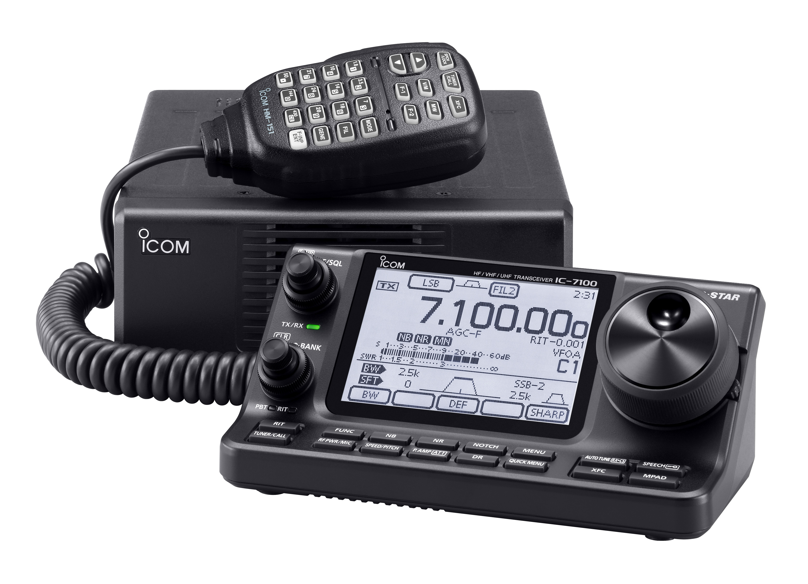
We could have wished for a bit more VHF/UHF power, but that hasn't changed (HF 100, VHF 50, UHF 35). The CI-V port address is different, so most IC-7000 accessories won't work with the IC-7100. The NB/AGC loop pumping problem still exists, and there is no roofing filter.
It does have a touch screen as well as 16 labeled buttons. These buttons mimic and/or duplicate a few of the various menu items in the 7000. In some cases they're handy, in most cases they aren't. The screen has slightly higher resolution than the IC-7000, a bit larger, but strictly black (gray really) and white. D-Star is standard hence the higher street price.
It has an SD memory card slot which can be used for transmission recording, both transmit and receive, and storing the memory configuration. If you're a contester or canned digital mode type of operator, this could be a great feature. The remote-only head has a built in speaker driven by slightly more audio power than is predecessors. If you're a CW fan, you'll like the fact the key plugs into the head, rather than the main unit. The DSP circuitry has been massaged improving the close-in selectivity slightly over the IC-7000's.
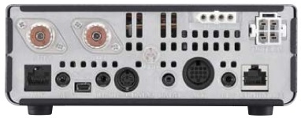
The heft is down a bit, as the main unit weighs in at just 2.3 kg, or just under 5 pounds. The head is just over a pound. I suspect that is why one of the accessories is a suction cup mount. Be warned however, mounting on the dash or windshield is one of the deadly installation sins—think airbag!
Incidentally, Ward Silver, NØAX, reviewed the IC-7100 in the July, 2014 issue of QST. It is a well-written piece, and if you're contemplating buying an Icom IC-7100, by all means read the article.
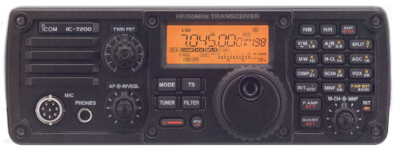 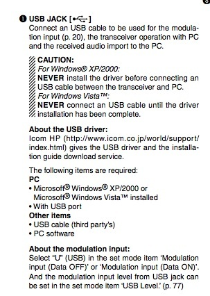
It has a real PTT relay capable of handling most modern amplifiers (16 vdc, 500 mils, maximum). Its street price is hovering around $1,200, and the mobile mounting bracket is about $30.
Contrary to some popular press, the IC-7200 does indeed have a 6 kHz roofing filter. From a personal (read that as mobile) standpoint, the roofing filter needs to be closer to 3 kHz, and perhaps as low as 2.4 kHz. In any case, it is a step in the right direction.
The IC-7200 is not waterproof, but it is splash proof (what ever that means). Unlike the 7000/7100, it uses a standard 8 pin microphone jack, and will accept a SM-8 base microphone without an adapter cable.
One interesting feature is a USB port on the rear panel. If you click on the owner's manual verbiage at left, you can view a full-sized version (note the difference in procedures depending on the version of Windows you have). One thing is apparent, and that's its lure for all things Field Day. A requisite laptop, a little software, and viola! Sadly, all is not want! The IC-7200 doesn't have voice or CW memories, like the IC-7000 (and later Icom transceivers). However, considering the street pricing, it is still a decent bargain.
Regardless of its size, a few folks are buying the IC-7200 to use mobile. Be advised, most antenna controllers designed for the IC-7000 will not work with the IC-7200, as the CI-V addressing is different.
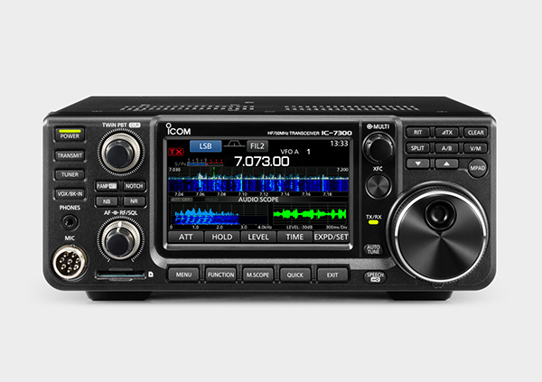
The receiver uses direct conversion technology giving it rather good front end characteristics. It has 15 separate bandpass filters to cover frequencies from 30kHz to 74.8 MHz. It even transmits in the 70 MHz band for those countries where it is legal. Obviously, it doesn't have 2 meters and above.
It supports most common Icom accessories like the AH-4. It also has a built-in auto-coupler (≤3:1), but in most mobile cases, using it with a screwdriver antenna is fraught with issues. A back-panel USB port can be used to program the transceiver with the available software. The port also allows the waterfall display to be externally viewed. Folks into digital communications will like this feature, but it is a lost cause when operating mobile-in-motion.
The MSRP is $1,700, with a street price around $1,500. This is about the same pricing level as the less-capable Yaesu FT-991, which it directly competes with. If you want more detailed information on the IC-7300, you can down load the manual and/or product brochure from Icom's web site.
 The only real mobile entry from Kenwood is the TS-480. It comes in two iterations; a 100 watt version with a built in auto coupler, and a 200 watt version without the coupler. The latter is a poor man's amplifier, as no other made-for-mobile radio offers this much power. The street price for the Hx version originally was $1,100, and the Sx (SAT) $999.
The only real mobile entry from Kenwood is the TS-480. It comes in two iterations; a 100 watt version with a built in auto coupler, and a 200 watt version without the coupler. The latter is a poor man's amplifier, as no other made-for-mobile radio offers this much power. The street price for the Hx version originally was $1,100, and the Sx (SAT) $999.
The head, and the main body cannot be connected together (remote only), although an after-market bracket is available. As with other Kenwood transceivers, the microphone plugs into the main unit, not the head. The cables (control and microphone) have pre-installed split beads to minimize RFI problems. This brings up another potential problem. The option cable extension kit might be needed in some installations. Rather than use CAT5 cables, buy the real deal. If you don't, you'll be plagued by RFI problems.
Calling it a miniature radio is a bit of a misnomer. It is approximately 7 x 2.5 x 10 inches, and weighs in at just over 8 pounds. Its 16 bit DSP is AF based, but Kenwood has done a decent job of designing out some of the problems that have plagued most AF based DSPs. There are optional SSB and CW filters available. The 1.9 kHz improves the already decent selectivity ratings compared to the other made-for-mobile offerings. However, if you're forced to use the noise blanker, the selectivity advantage disappears.
Speaking of optional devices, here's a good suggestion. Order the optional VGS-1 voice guide and storage unit. Like the Icom IC-7000, it reads out all of the vital settings in the radio, and it also allows recording up to 90 seconds (3 x 30 seconds) of audio. The audio can be used to record, and play back any transmission, as well as CQ and CW messages. It is well worth the $80 it sells for.
The funny looking serrated plate shown in the photo is the mobile mounting bracket for the head, which is attached with double-sided sticky tape (and optional self-tapping screws). For some, this could be a drawback. If you use this type of mounting, remember this: Some automotive surfaces can be damaged and/or stained by the tape. Wherever you mount it, make sure is well out of reach of any SRS device. That virtually rules out the top of the dash as shown in their advertising brochures. By the way, over their life time, vinyl plastics continually secrete volatile polymers, especially in hot weather. These polymers decrease the bond of most double-sided sticky tapes with predicable results.
The 200 watt (Hx) version requires two power hookups (or two separate factory power supplies if used as a base). These can be combined into one feed, but users should remember the radio draws about 40 amps, so heavy duty wiring is a necessity.
Both versions have two cooling fans, so full power, key-down operation is possible (30 minute limit, 25°C ambient). One thing to keep in mind, the main body of the radio requires good ventilation clearance on both ends which might negate some mounting locations, under seat for example. The Hx version also gets very warm, hot actually, in normal SSB operation, so don't be alarmed if it does.
The manual has an interesting comment, which proves not everyone understands the origins, and cures for mobile egressed RFI. It states in part; If there is excessive noise, use suppressor spark plugs (with resisters as all new vehicles come equipped with), and/or DC line filters to reduce the electric noises. While the former suggestion might help, if you have to resort to using brute-force DC line filters, you haven't installed your equipment correctly.
The TS-480 sports a CAT interface similar to those on the TS-2000, and there are quite a few after-market accessories which will work with this radio. Lastly, the two coax connectors are installed on dongles, rather than hard-mounted on the chassis. This fact could be a drawback for those who R&R the transceiver regularly.
One often expressed virtue of the TS480, is that it can be had in a SAT version, which sports an internal auto-coupler. Apparently, there is a misunderstanding about matching HF mobile antennas, that leads people to the conclusion that the SAT model is the preferred choice. But... Like almost all built-in ones, the maximum matching range is up to a 3:1 SWR. In a mobile scenario, this will about double the the bandwidth of a monoband antenna, which in reality isn't much of an improvement on 80 or 40 meters. Further, using one with a remotely-tuned antenna is problematic at best. The Hx version, at 200 watts PEP output, makes the need for a mobile amplifier all but moot. The correct mobile choice should be obvious.
 The Yaesu FT-450D is a 160 through 6 meter, 100 watt transceiver. It is a bit large for a mobile (9 x 3.3 x 8.5 inches), cannot be remoted, and it doesn't have VHF capability. Whether the size and these missing features are a drawback, depends on your needs. It is currently available, but that may soon change due to the introduction of the FT-991.
The Yaesu FT-450D is a 160 through 6 meter, 100 watt transceiver. It is a bit large for a mobile (9 x 3.3 x 8.5 inches), cannot be remoted, and it doesn't have VHF capability. Whether the size and these missing features are a drawback, depends on your needs. It is currently available, but that may soon change due to the introduction of the FT-991.
It has about the same attributes most of its competitors have, including an excellent IF-based DSP. There's also a 10 kHz bandwidth roofing filter located in the first IF, right after the first mixer. This not only increases selectivity, it improves the performance of the DSP. It has two voice memories, but they're both just 10 seconds long, as compared to 30 seconds times four for the Icom IC-7000.
There are a couple of features that are very unique. One of those is the PTT TOT (timeout timer), a feature every transceiver should have! If you happen to sit on your microphone and key the radio, the TOT will shut down the transmit. It is adjustable from 1 to 20 minutes. The other is the automated CW beacon. I can't imagine someone using it mobile, but if you're into 6 meters, you just might.
All is not rosy, however. The microphone gain is a menu-selectable LOW, NOR, HIGH, and the latter two automatically turn on the speech processor. While there are menu adjustments for the DSP microphone equalizer, finding the right setting isn't easy, especially if you close talk your microphone (which you should do in any case). If you use a Heil Traveler®headset, you'll also find the lack of fine settings exacerbating. There is an internal adjustment (Maintenance Menu), but it is not something you want to play with unless you have the right equipment. The golden screwdriver folks probably will mess with it anyway.
Just as quirky, is the fact there is no separate RIT control in the original FT-450. Instead, you have to push the RIT button, and adjust the receive frequency offset with the main tuning knob. This may not sound like too much of a problem in a mobile scenario, but it is if you work a lot of nets. The FT-450(D) allows you to reprogram the DSP/Sel knob to use it instead. Whether this is a fix depends on the user.
As stated elsewhere, transceiver manufacturers seemingly have a hard time designing menu settings to be intuitive, and ergonomically easy. Although the FT-450D is better than some, it still lacks ease of use, especially in a mobile setting. Again, the best way (read that as safest way) is to learn the settings verbatim, or at least keep the manual handy.
Unlike its little bother the FT-857, the FT-450D has a complete set of CAT commands, which makes computer interfacing a breeze. In fact, a lot of the existing Yaesu, after-market accessories which use the CAT commands will work with this radio. Incidentally, the commands are virtually identical to those of the FT-950.
Like most current models, the cooling fan is temperature controlled, and a bit noisy when it is on high speed. The LCD display is pleasantly large, and easy to read. Street price is about $699. There is a version with an internal auto-coupler ($770), and a mobile bracket is available.
By the way, the "D" version added both a 300 Hz, and 500 Hz, CW DSP filter presets. It also sports a built-in (instead of optional) antenna tuner, and the keys are back lighted. Unfortunately, both the oddball microphone gain control, and quirky RIT adjustment remain, albeit the latter is now programmable.
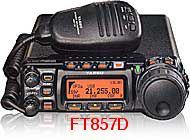
The front end sensitivity (even in the D model) takes a back seat to every other current offering. To be honest, in a mobile scenario this fact isn't particularly important, but could be under the right (wrong?) circumstances. The transmit keying line can handle most mobile amplifiers without a keying buffer, which is convenient. However, if you use an auto coupler or a tune device, and an amplifier, you'll have to build you're own "Y" adapter cable.
The power cord is actually a dongle, and an extension cable with the fuses included which might be a drawback if you R&R the radio frequently. There is another, potential drawback, if you use one of the many after-market devices which draw power from the radio (i.e. antenna controllers). The rear panel ports are protected with a 3.5 amp, surface-mounted fuse. It is not an easy task to replace, and requires special tools. In my opinion, this negates using the ports for screwdriver antenna power.
Rumors persist that Yaesu is coming out with a new miniature transceiver later this year. Lets all hope the screen is larger, and that it has video out. If nothing else, it would goad Icom into upgrading the IC-7100!
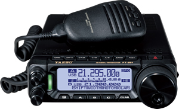
It sports a large monochrome display, a USB port (usable for remote control), 3 kHz roofing filter, a 32 bit IF DSP, and supports their new (optional) FC-50 auto-coupler. Street pricing hovers around $750.It is small at just ≈6x9x2 inches, and ≈7 pounds with the supplied mobile mounting bracket. Like the 857, it is menu driven. The menus layout is a bit better than its forerunner, but still a confusing compared to its competition. Max current is 23 amps, and power out is 100 watts.
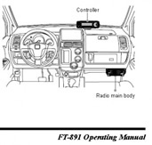
Preliminary data indicated the FT-891 was not remotable, but the production units are. The listed "kit" is a YSK-891, which is the same one used for the FT-857. However, the pictorial on page 8 of the Operator's Manual depicts the mounting of the control head in a very dangerous position, nearly atop the passenger side airbag! Don't make this mistake!
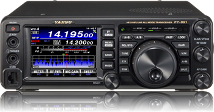
The 3.5 inch color display is easy to read. It has IF-based DSP of course, and for those folks who must have everything, a remote control is available. All of the popular Yaesu accessories are supported, including the FC40 auto-coupler. No mobile mounting bracket supplied, but one is available. Yaesu's data mode is supported, but its high-speed variant isn't (no surprise really), so no digital video capabilities.
Let us hope Yaesu brings out a real mobile (remotable) version, both of which would be a step in the right direction. So was the inclusion of a GPS/CAT port, and a USB port. One curiosity however, is the first IF for all bands is 69.450 MHz, which is very close to the 19th harmonic of the color burst frequency of 3.579545 MHz, a popular, mobile CPU master oscillator frequency. It remains to be seen if this becomes an issue or not.
There are several others in popular use, albeit in legacy form. Certainly the Yaesu FT-100D, SGC® 2002, Kenwood TS-50, TenTec® 555 Scout®, and others are in this category. If you're still using one of these transceivers, and it is giving you good service, there's probably no reason to upgrade (if you're satisfied). However, finals for these transceivers are very scarce, and in some cases nonobtainium. If cost is an object (it should be), if and when the finals fail, you're much better off junking the radio, rather than attempting to repair it. It is, after all, a cost-benefit equation with no clear solution.
The power handling capability of both the tuner port and the accessory jack of most miniature transceivers is limited. A lot of after-market devices, including some screwdriver controllers, antenna tuners, and digital interfaces, use these ports for power. Icom states you can draw power up to one amp from pin 8 of the accessory jack. Although no specs are published about the current draw from pin 3 of the tuner port, most folks assume up to one amp is okay as this is what the AH-4 draws when it is tuning. Don't try to draw more than one amp total for both ports!
These ports are fused (3.5 amp SM for the FT857, 4 amp 3ag for the 706, and 5 amp AGO for the 7000/7100/7200), and all are switched on and off by a switching transistor and/or a small relay. If you short either of these ports to ground, there are three failure scenarios. First, the fuse will blow which doesn't happen often. Secondly, the switching transistor will fail (usually open). And lastly, and most likely, a circuit board trace will melt. The latter two failures are costly ones to repair.
Further, the voltage drop across these ports with a one amp load imposed on them, is typically 1 volt less than supply voltage. While this might be okay for short durations like the tuning cycle of an AH-4 or other tuner using the port for power, long term draw means that 1.3 watts or so of heat is being absorbed by the radio's circuitry. If you need the radio to supply switched power to an ancillary device, you should use a properly buffered relay to do the task. Or, use a PowerWerx APO3 as described below.
Rear panel jacks are often surface mounted. Even a minor bump can dislodge them from their circuit board. In the case of the 7000, it takes about 2 hours to fix because you have to R&R the main board too. Assuming, of course, that you're adept at working on surface mounted devices, that you have the tools to do so, and the circuit board hasn't been damaged. If you're not adept, this is a costly repair (about $150). Forewarned is forearmed, so even if you have the main unit hidden under a seat, protect the rear apron from impact. It is also advisable to use angle plugs (90°), rather than straight ones.
If you use the front jack to power a speaker, and the audio level is very low, check to make sure the switch on the back of the head is set for speaker.
The various Icom models, and most all of the other miniature radios on the market, use the same basic circuitry to control several functions. The power out, SWR, and ALC meter readings; the SWR power fold back protection; the ALC fold back protection; and the over-temperature, two-speed fan control are all part of one basic module. Aside from the fact that the built in meter's accuracy is suspect to begin with, when any of the other functions are doing their individual protection bits, the metering becomes virtually useless. For example, when the fan is running, the SWR readout is higher than the power out when transmitting into a dummy load. At the same time the ALC will read full scale on one band, and have no indication on another. This regardless of the control settings. The long and short of this is obvious. Don't rely on the internal meter for any indication unless the transceiver is (dead) cold and the output is into a dummy load. Even then, it is suspect.
Due in part to their size, a lot of manufacturers use modular jacks and plugs for both microphone and remote cables. While they look similar to RJ45 telephone jacks and plug, they aren't! Here is some more information on Cabling.
 Some radios don't have an automatic off feature, which can lead to a dead battery. The PowerWerx APO3 is the best solution to this problem. However, the APO3 is more than just a timed (0, 5, 10, 20 minutes), auto off device. But, before you dismiss the APO3 because your radio has an auto-off feature, who says you have to use it to control your radio?
Some radios don't have an automatic off feature, which can lead to a dead battery. The PowerWerx APO3 is the best solution to this problem. However, the APO3 is more than just a timed (0, 5, 10, 20 minutes), auto off device. But, before you dismiss the APO3 because your radio has an auto-off feature, who says you have to use it to control your radio?
 As I said above, there is just so much power you can safely draw from the radio itself. Since the APO3 is equipped with Anderson Powerpole connectors, expanding the device is easy. For example, you could use it to feed power to their 4005 RigRunner, and automatically switch all of your ancillary devices (wattmeters, powered speakers, etc.). This results in less wire, wiring, switches, and a lot of headaches.
As I said above, there is just so much power you can safely draw from the radio itself. Since the APO3 is equipped with Anderson Powerpole connectors, expanding the device is easy. For example, you could use it to feed power to their 4005 RigRunner, and automatically switch all of your ancillary devices (wattmeters, powered speakers, etc.). This results in less wire, wiring, switches, and a lot of headaches.
Here's how it works. There are four pre-programmed voltages (11.8, 12.1, 12.7, 13.05 volts) settings. Properly programmed, the APO3 will turn off, and on, your radio just by monitoring the battery voltage! Remember, static battery voltage is about 12.4 volts, and at least 13.5 volts when the engine is running. Since it monitors the voltage, it knows when to turn the radio off and on. There's also a 10 minute off delay which avoids unnecessary operation (cold weather, heavy accessory load, etc.). It switches 20 amps, and can handle up to 30 amps, making it compatible with almost any radio. At $60 (MSRP) it is also affordable. Visit their web site for more information.
One caveat. Some radios are switched on electronically. Once the APO3 powers up, you'll still need to push your radio's on button.
One of the drawbacks to miniaturization is heat dissipation, and it can be a big problem in mobile installations, so in all cases there is a heat sink fan. The fan can run during receive, and anytime the transceiver is in transmit. While they're not very noisy they do increase the power draw by about 1 amp. Too little heat, better yet a lack of it (read that as cold), can cause stability problems in oscillators and in some cases cause failure of a liquid crystal display (LCD). Too much heat and the life span of solid state devices fall like a rock, and LCDs to blanch out or fail altogether. In any case, it is not something most amateurs loose sleep over.
We would all like to think that transceivers designed for mobile operation take into account the wide temperature extremes encountered, but this is isn't necessarily so. For example, the Icom IC-706 is rated at a usable frequency range of +14°F to +140°F. While one would think this is adequate, the fact is there are lots of places where temperatures are much lower, and can be much higher too.
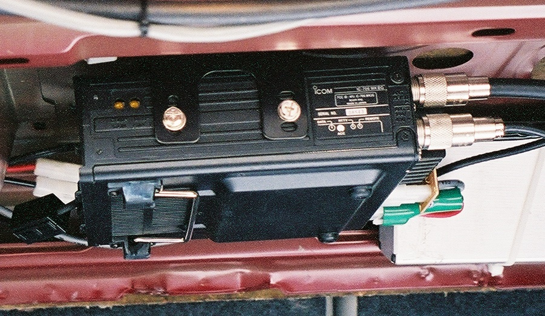
Pay attention to your ALC meter reading. Any ALC indication is too much. If it starts to rise off the peg, you're driving it too hard. In either case the transceiver is in a protection mode. This situation can and does cause excessive IMD products to be generated and should be avoided.
Heat rises so it is always better to mount the main unit under a seat or on the floor of the trunk rather than under a package shelf (as shown right) or where the sun can shine directly on it. This will help minimize any heat related problems. Make sure you set the auto-off function, or buy a PowerWerx APO3.
Any piece of electronic equipment should be well ventilated. A common mounting scheme is to use an unused DIN slot or ashtray receptacle to mount the transceiver into. This makes them convenient, but in some cases, the requisite ventilation is inadequate. Worse yet, in some vehicles this allows the heater vent to exhaust directly on to the heatsink with predictable results. In fact, the heatsink of a 65 watt 2 meter transceiver can get hot enough to melt plastic.
Transceivers shouldn't be mounted directly to a surface, whatever it is. Rather, the factory-supplied mounting bracket should be used to hold the radio away from the mounting surface. The allows air to flow freely around the transceiver. They shouldn't be mounted vertically either, as mentioned in some owner's manuals. And forget about adding an external fan.
Mobile amplifiers also get hot. Most are designed to provide a nominal 500 watts PEP output, albeit some are 300 to 400 watts PEP. In order to generate this amount of output power, they input about twice their output (50% efficiency). Depending on the user's speech pattern (average to peak ratio), the amplifier's heatsink is dissipating between 125, and 250 watts. As with transceivers, adequate ventilation is an absolute requirement!
There is a lot more to mobile installations than throwing the rig in the car and taking a trip. It requires safety mindfulness, forethought, due diligence, attention to detail, and it takes time to do it correctly. Heat considerations are only part of the equation. You might not have ever had a problem (or be aware of one) with heat in your mobile installation. This means just one thing; Murphy hasn't discovered you're operating mobile.
Almost without exception, every solid state rig out there has a low voltage limit. Under this limit and the rig will reset or shut down. For the average Icom, this is 11.6 volts, which is about nominal for the rest of these small wonders. If the rig is on when you start your vehicle (usually in cold weather), the battery voltage can momentarily drop to 8 volts or less. While the duration isn't very long, it is enough to cause the aforementioned problems.
Over voltage can be a problem too in vehicles where the battery is located beneath the passenger compartment, or in the trunk. There is more information on this issue here.
There is another voltage related issue that should be mentioned, and that is voltage in, versus power out. At a nominal 13.8 VDC, most of the aforementioned radios will output their rated power. Lower the input voltage to 12 VDC, and none of them will. Driving them harder to make up for this loss is not the solution. This is discuss in detail in the VHF Options article.
{kind=link}
{kind=link}
{kind=link}
{kind=link}
{kind=link}
{kind=link}
{kind=link}
{kind=link}
{kind=link}
{kind=link}